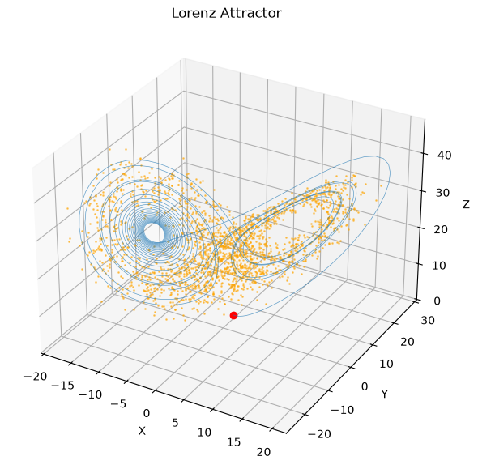
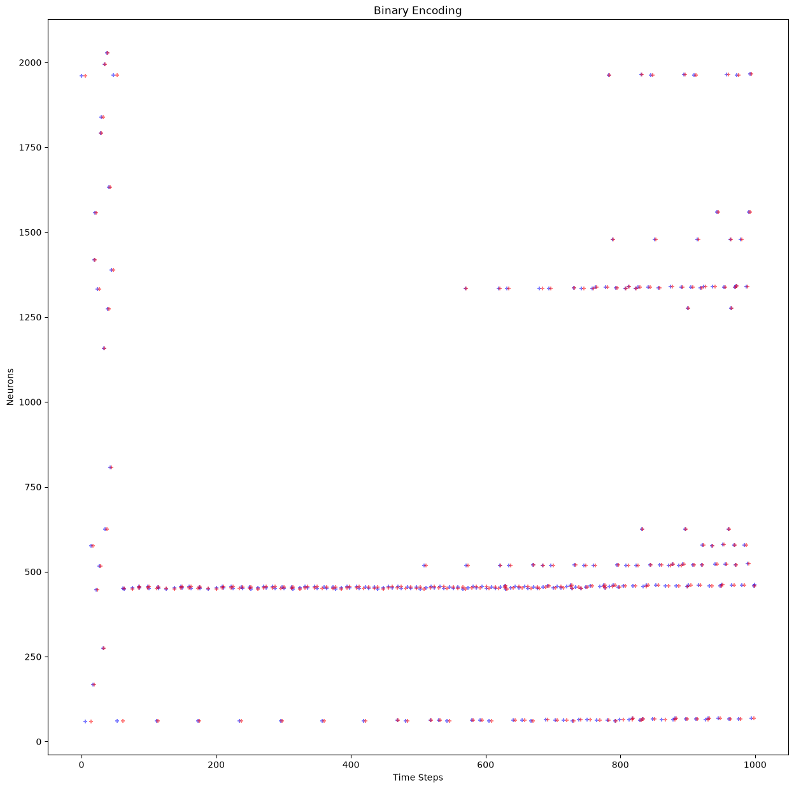
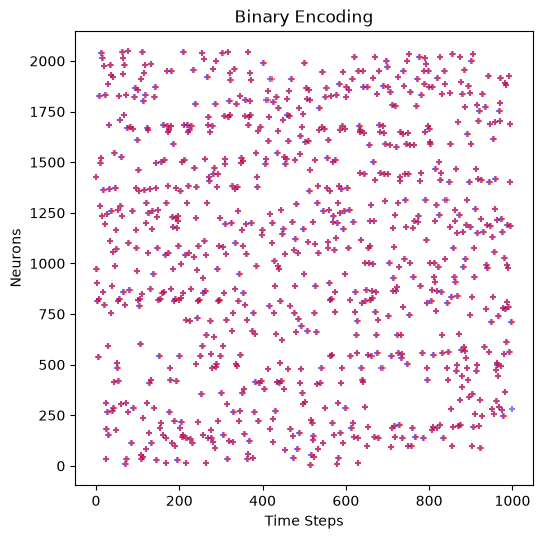
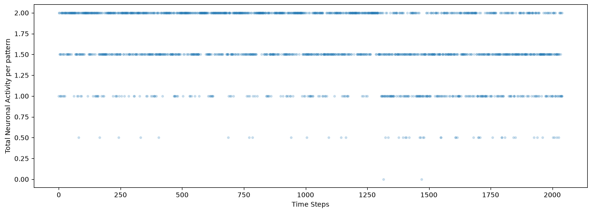
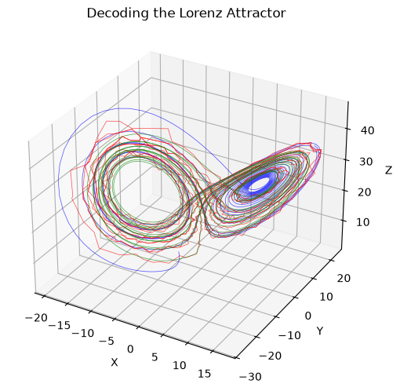
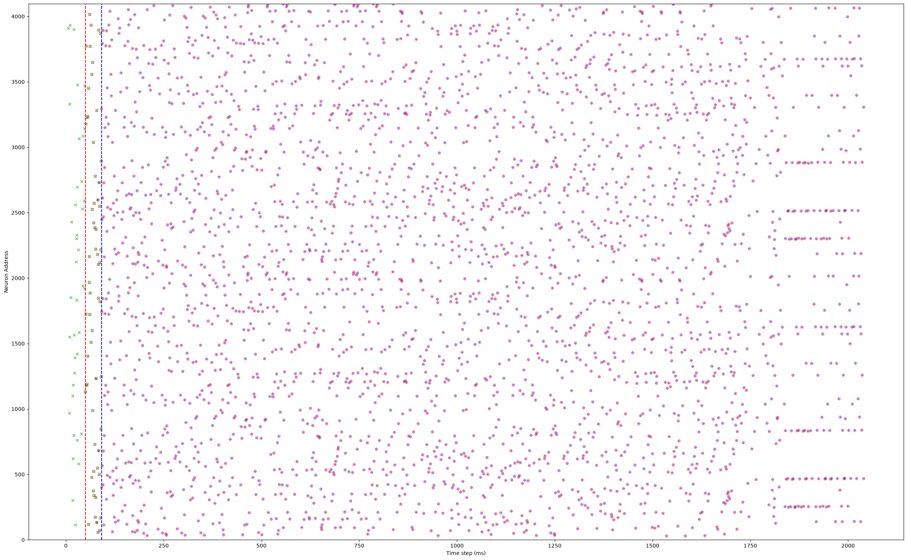

[ ]:
from mnesis_boilerplate import torch, np, pd, sns, plt, splt, data_cache, figpath, RECOMPUTE, DEBUG, phi, loss_fn, Params, SubplotParams
from mnesis_boilerplate import printfig, pprint, get_scores, approx_equals, asdict
from mnesis_chains import HD_SNN, SpikingPattern
# RECOMPUTE = True
#
exp = 'lorenz_chaotic'
datetag = '2026-09-07'
Using device: mps
[2]:
# Best params: {'do_deconv': True, 'do_pinv': True, 'learn_beta': True, 'learn_threshold': False, 'reset_mechanism': 'zero', 'optimizer': 'sgd', 'lif_beta': 0.2793677983588714, 'alpha_surrogate': 3.4173865647979325, 'base_lr': 0.020174564291745, 'final_lr': 0.002324399926587671, 'delta1': 0.030344850519916238, 'delta2': 7.035080740784561e-06, 'dropout': 0.27775833644156994, 'lif_threshold': 0.7068478058667603}
opt_dict = dict(N_neuron=4096, N_time=2000//DEBUG+41, num_epochs=5,
N_pattern=4, # HACK to make it easier to learn the Lorenz attractor with only 4 patterns
lif_beta=0.3, alpha_surrogate=5.,
base_lr=0.02, final_lr=0.0023, delta1=0.03, delta2=7e-6, dropout=0.28,
lif_threshold=.70, do_pinv=True)
opt = Params(**opt_dict)
opt
[2]:
Params(datetag='2026-09-07', N_neuron=4096, num_delay=41, N_pattern=4, N_time=2041, N_pretime=50, p_A=0.00016, p_flip=0.01, seed=2026, lif_beta=0.3, lif_threshold=0.7, learn_beta=False, learn_threshold=False, do_pinv=True, do_deconv=True, num_epochs=5, num_warmup_epochs=16, base_lr=0.02, final_lr=0.0023, delta1=0.03, delta2=7e-06, dropout=0.28, alpha_surrogate=5.0, surrogate_name='FastSigmoid', loss_name='SpikeF1scoreLoss', reset_mechanism='zero', optimizer='adadelta', verbose=False, fig_width=30, fig_height=15, phi=1.61803, N_time_show=1000, N_neuron_show=1024, N_scan=14, N_cv=11)
[ ]:
# # HACK - using previous computations for plotting purposes, but the code has changed since then. The outputs are not guaranteed to be correct.
# opt_dict = dict(N_neuron=4096, N_time=2000//DEBUG+41,
# N_pattern=4, # HACK to make it easier to learn the Lorenz attractor with only 4 patterns
# lif_beta=0.4,
# lif_threshold=.74, do_pinv=True)
# opt = Params(**opt_dict)
# opt.datetag = '2026-08-06'
# opt
working memory with the Lorenz attractor¶
define the pattern generator¶
[4]:
pprint('DEFINING THE PATTERN GENERATOR: Creating a Lorenz attractor spike pattern generator')
===================================================================================
DEFINING THE PATTERN GENERATOR: Creating a Lorenz attractor spike pattern generator
===================================================================================
[ ]:
class LorenzSpikingPattern(SpikingPattern):
"""A Lorenz attractor spike pattern generator.
Deterministically integrates the Lorenz system with a fourth-order
Runge-Kutta scheme, discretises every position onto the nearest of
``N_neuron//2`` attractor centroids, and encodes the resulting symbol
sequence with the ON/OFF code of :meth:`encode_trajectory`.
Attributes:
dt: Integration time step of the Runge-Kutta scheme.
init_state_std: Standard deviation used to draw random initial
states.
sigma, rho, beta: The classical Lorenz parameters.
warmup_steps: Number of steps discarded so that the trajectory
settles onto the attractor before it is used.
is_periodic: Always ``False``, the attractor being chaotic.
"""
def __init__(self,
dt=0.01, init_state_std=3.0,
sigma=10.0, rho=28.0, beta=8.0/3.0,
):
super().__init__()
self.desc = "A Lorenz attractor spike pattern generator"
self.init_state_std = init_state_std
self.dt = dt
self.sigma = sigma
self.rho = rho
self.beta = beta
self.warmup_steps = 1000
self.is_periodic = False
def init(self, opt):
"""Set up the generator and draw the frozen target.
Draws random initial states, pushes them through a warmup
integration so that they lie on the attractor, computes the
centroids and encodes the target spike raster.
Args:
opt: A :class:`~mnesis_boilerplate.Params` instance providing
``N_pattern``, ``N_neuron``, ``N_time`` and ``seed``.
"""
self.opt = opt
self.steps = opt.N_time
# random initial state in the Lorenz attractor
rng = np.random.default_rng(opt.seed)
init_state = rng.normal(size=(self.opt.N_pattern, 3)) * self.init_state_std
trajectory = self.get_lorenz_trajectory(steps=self.warmup_steps, init_state=init_state)
self.init_state = trajectory[:, -1, :] # random initial state in the Lorenz attractor
self.centroids = self.get_lorenz_centroids()
self.frozen_target = self.get_lorenz_spike().to(opt.device)
def lorenz_rhs(self, state):
"""Compute the right-hand side of the Lorenz system.
Args:
state: array of shape ``(N_pattern, 3)`` holding the
``(x, y, z)`` coordinates of each pattern.
Returns:
numpy.ndarray: time derivatives ``(dx, dy, dz)`` of shape
``(N_pattern, 3)``.
"""
x, y, z = state[:, 0], state[:, 1], state[:, 2]
dx = self.sigma * (y - x)
dy = x * (self.rho - z) - y
dz = x * y - self.beta * z
return np.array([dx, dy, dz], dtype=np.float64).T
def get_lorenz_trajectory(self, N_pattern=None, steps=None, init_state=None):
"""Integrate the Lorenz system with a fourth-order Runge-Kutta scheme.
Args:
N_pattern: Number of simultaneously integrated trajectories;
defaults to ``opt.N_pattern``.
steps: Number of integration steps; defaults to ``self.steps``
(i.e. ``opt.N_time``).
init_state: array-like of shape ``(N_pattern, 3)`` giving the
initial conditions; drawn randomly from a Gaussian of
stddev ``init_state_std`` when ``None``.
Returns:
numpy.ndarray: integrated trajectory of shape
``(N_pattern, steps, 3)``.
Raises:
FloatingPointError: if a ``NaN`` or ``Inf`` appears in the
trajectory (numerical blow-up of the integration).
"""
if N_pattern is None: N_pattern = self.opt.N_pattern
if steps is None: steps = self.steps
if init_state is None: init_state = np.random.randn(N_pattern, 3) * self.init_state_std
trajectory = np.zeros((N_pattern, steps, 3), dtype=np.float64)
trajectory[:, 0, :] = np.array(init_state, dtype=np.float64)
for i in range(1, steps):
state = trajectory[:, i - 1, :]
k1 = self.lorenz_rhs(state)
k2 = self.lorenz_rhs(state + 0.5 * self.dt * k1)
k3 = self.lorenz_rhs(state + 0.5 * self.dt * k2)
k4 = self.lorenz_rhs(state + self.dt * k3)
trajectory[:, i, :] = state + (self.dt / 6.0) * (k1 + 2.0 * k2 + 2.0 * k3 + k4)
if not np.isfinite(trajectory).all():
raise FloatingPointError("NaN or Inf detected in RK4 trajectory")
return trajectory
def get_lorenz_centroids(self, steps=int(1e5), do_kmeans=False, do_norm=True):
"""Build the codebook of attractor centroids used by the encoder.
Integrates a single, much longer trajectory than the target (so that
resampled points are not locally predictable) and turns it into
``N_neuron//2`` prototype positions, either by resampling it at
constant arclength (``do_norm``, the default) or by clustering it
with k-means (``do_kmeans``).
Args:
steps: Number of integration steps of the long trajectory.
do_kmeans: If ``True``, cluster the trajectory with k-means
instead of resampling it.
do_norm: If ``True`` (default), resample the trajectory at
constant arclength, using the norm of ``lorenz_rhs`` as a
proxy for the velocity along the curve.
Returns:
numpy.ndarray: centroid coordinates of shape
``(N_neuron//2, 3)`` when ``do_norm`` is ``True``, otherwise
the first ``N_neuron`` points of the trajectory.
"""
trajectory = self.get_lorenz_trajectory(steps=self.warmup_steps, N_pattern=1, init_state=None)
trajectory = self.get_lorenz_trajectory(steps=steps, N_pattern=1, init_state=trajectory[:, -1, :]).reshape(-1, 3)
if do_norm:
# calculer un temps si on voyageait sur la ligne à vitesse constante et prendre des points à intervalles réguliers de ce temps, pour éviter d'avoir des points très proches les uns des autres
dv = (self.lorenz_rhs(trajectory)**2).sum(axis=1)**0.5
dt = np.cumsum(dv)
dt /= dt[-1] # normalize to 1
dt *= trajectory.shape[0] # scale to total number of points
trajectory = trajectory[np.linspace(0, dt[-1], (self.opt.N_neuron//2), endpoint=False, dtype=int), :]
if do_kmeans:
from sklearn.cluster import KMeans
kmeans = KMeans(n_clusters=(self.opt.N_neuron//2), random_state=0).fit(trajectory)
centroids = kmeans.cluster_centers_
else:
# idée d'Alexis de prendre des points réguliers, mais sur une trajectoire *beaucoup* plus longue, pour éviter les points échantillonés trop proches (donc prédictibles)
centroids = trajectory[:self.opt.N_neuron, :]
return centroids
def encode_trajectory(self, trajectory):
"""Encode trajectories as an ON/OFF spike code.
Each time step is assigned to its nearest centroid (winner-take-all
over ``N_neuron//2`` cells), then converted to an ON/OFF code: a cell
emits an ON spike at burst onset and an OFF spike at burst offset, so
a contiguous burst costs two spikes instead of one per time step,
reducing redundancy while preserving edge timing. ON cells occupy the
first half of the neuronal axis and OFF cells the second half, which
makes the code invertible by temporal integration
(:meth:`decode_position`).
Args:
trajectory: array-like of shape ``(N_pattern, N_time, 3)``,
positions on the attractor.
Returns:
torch.Tensor: spike code of shape
``(N_pattern, N_neuron, N_time)``.
"""
binary_code = np.zeros((self.opt.N_pattern, self.opt.N_neuron//2, trajectory.shape[1]), dtype=float)
for _i_pattern in range(self.opt.N_pattern):
# compute distances to centroids
dist2 = ((trajectory[_i_pattern, :, None] - self.centroids[None, :, :]) ** 2).sum(axis=-1)
ind = dist2.argmin(axis=1)
binary_code[_i_pattern, ind, np.arange(trajectory.shape[1])] = 1.
# ON/OFF code
binary_code_ternary = binary_code.copy() # (N_pattern, N_neuron//2, N_time)
binary_code_ternary[:, :, 1:] -= binary_code[:, :, :-1]
binary_code_ON = (binary_code_ternary == 1)
binary_code_OFF = (binary_code_ternary == -1)
binary_code_ON_OFF = np.concatenate([binary_code_ON, binary_code_OFF], axis=1).astype(float)
return torch.Tensor(binary_code_ON_OFF)
def decode_position(self, binary_code):
"""Decode spikes back into positions on the attractor.
Inverse of :meth:`encode_trajectory`: the ON and OFF planes are
differenced and integrated over time to recover the per-cell active
mask (onsets as +1, offsets as -1); the position at each step is the
weighted mean of the co-active centroids. When no cell is active (a
degenerate code), the previous position is reused.
Args:
binary_code: array-like spike code of shape
``(N_pattern, N_neuron, N_time)``, as produced by
:meth:`encode_trajectory`.
Returns:
numpy.ndarray: reconstructed positions of shape
``(N_pattern, N_time, 3)``.
"""
binary_code_ON = binary_code[:, :self.opt.N_neuron//2, :]
binary_code_OFF = binary_code[:, self.opt.N_neuron//2:, :]
print(binary_code.shape, binary_code_ON.shape, binary_code_OFF.shape)
binary_code_diff = binary_code_ON - binary_code_OFF # reconstruct the original code
binary_code_int = binary_code_diff.cumsum(axis=-1) # integral
reconstructed = np.zeros((self.opt.N_pattern, binary_code.shape[-1], 3), dtype=np.float64)
for _i_pattern in range(self.opt.N_pattern):
for t in range(binary_code.shape[-1]):
weights = np.asarray(binary_code_int[_i_pattern, :, t], dtype=float)
if weights.sum() > 0: # weighted mean of co-active centroids (deterministic tie-break)
reconstructed[_i_pattern, t, :] = (weights[:, None] * self.centroids).sum(axis=0) / weights.sum()
else:
print(_i_pattern, t, "No spike, using previous position")
reconstructed[_i_pattern, t, :] = reconstructed[_i_pattern, max(t-1, 0), :]
return reconstructed
def get_lorenz_spike(self, init_state=None):
"""Generate the frozen spike target from the attractor.
Integrates a fresh warmup (so that the real trajectory starts on the
attractor), then a full ``N_time`` trajectory, and encodes the latter
with :meth:`encode_trajectory`.
Args:
init_state: array-like of shape ``(N_pattern, 3)`` giving the
initial conditions; defaults to ``self.init_state``.
Returns:
torch.Tensor: spike code of shape
``(N_pattern, N_neuron, N_time)``.
"""
if init_state is None:
init_state = self.init_state
# perform a short warmup
trajectory = self.get_lorenz_trajectory(steps=self.warmup_steps, init_state=init_state)
# print('end=warmup', trajectory.shape, trajectory[-1, :])
# do the real thing
trajectory = self.get_lorenz_trajectory(init_state=trajectory[:, -1, :])
# encode in spikes
binary_code = self.encode_trajectory(trajectory)
# return as tensor
return binary_code # (N_pattern, N_neuron, N_time)
# def __call__(self, seed=None):
# return self.get_lorenz_spike()
lsp = LorenzSpikingPattern()
lsp.init(opt)
spike_pattern = lsp()
[ ]:
# trajectory = lsp.get_lorenz_trajectory(steps=lsp.warmup_steps) # Get trajectories for all patterns
# trajectory = lsp.get_lorenz_trajectory(init_state=trajectory[:, -1, :]) # Get trajectories for all patterns
trajectory = lsp.get_lorenz_trajectory() # Get trajectories for all patterns
fig = plt.figure(figsize=(10, 7))
ax = fig.add_subplot(111, projection='3d')
ax.plot([trajectory[opt.i_pattern, 0, 0]], [trajectory[opt.i_pattern, 0, 1]], [trajectory[opt.i_pattern, 0, 2]], 'o', color='red')
ax.plot(lsp.centroids[:, 0], lsp.centroids[:, 1], lsp.centroids[:, 2], 'o', markersize=1, alpha=0.5, color='orange')
ax.plot(trajectory[opt.i_pattern, :, 0], trajectory[opt.i_pattern, :, 1], trajectory[opt.i_pattern, :, 2], lw=0.5, alpha=0.7)
ax.set_xlabel("X")
ax.set_ylabel("Y")
ax.set_zlabel("Z")
ax.set_title("Lorenz Attractor")
# plt.show()
Text(0.5, 0.92, 'Lorenz Attractor')

[7]:
binary_code_ON_OFF = lsp.encode_trajectory(trajectory)
print(f"Trajectory shape: {trajectory.shape}")
print(f"Binary codes shape: {binary_code_ON_OFF.shape}")
print(f"Sparsity: {binary_code_ON_OFF.mean():.5f} (on average {binary_code_ON_OFF.sum() / opt.N_pattern / binary_code_ON_OFF.shape[1]:.3f} per step)")
Trajectory shape: (4, 2041, 3)
Binary codes shape: torch.Size([4, 4096, 2041])
Sparsity: 0.00023 (on average 0.474 per step)
[ ]:
# Visualization
fig, ax = plt.subplots(figsize=(15, 15))
# splt.raster(binary_code[opt.i_pattern, :opt.N_neuron_show, :opt.N_time_show].T, ax, s=25, c="blue", marker='+', alpha=.5)
splt.raster(binary_code_ON_OFF[opt.i_pattern, :(opt.N_neuron//2), :opt.N_time_show].T, ax, s=25, c="blue", marker='+', alpha=.5)
splt.raster(binary_code_ON_OFF[opt.i_pattern, (opt.N_neuron//2):, :opt.N_time_show].T, ax, s=25, c="red", marker='+', alpha=.5)
# Binary encoding example
# ax.imshow(1-binary_code[opt.i_pattern, :500, :1000].T, aspect='auto', cmap='gray')
# ax.imshow(1-binary_code[opt.i_pattern, :, :].T, aspect='auto', cmap='gray')
# ax.imshow(binary_code.T, aspect='auto', cmap='gray')
ax.set_title('Binary Encoding')
ax.set_xlabel('Time Steps')
ax.set_ylabel('Neurons')
Text(0, 0.5, 'Neurons')

[9]:
binary_code_ON_OFF = lsp.get_lorenz_spike()
print(f"Trajectory shape: {trajectory.shape}")
print(f"Binary codes shape: {binary_code_ON_OFF.shape}")
print(f"Sparsity: {binary_code_ON_OFF.mean():.5f} (on average {binary_code_ON_OFF.sum() / opt.N_pattern / binary_code_ON_OFF.shape[1]:.3f} per step)")
Trajectory shape: (4, 2041, 3)
Binary codes shape: torch.Size([4, 4096, 2041])
Sparsity: 0.00040 (on average 0.810 per step)
[ ]:
# Visualization
fig, ax = plt.subplots(figsize=(15, 15))
# splt.raster(binary_code[opt.i_pattern, :opt.N_neuron_show, :opt.N_time_show].T, ax, s=25, c="blue", marker='+', alpha=.5)
splt.raster(binary_code_ON_OFF[opt.i_pattern, :(opt.N_neuron//2), :opt.N_time_show].T, ax, s=25, c="blue", marker='+', alpha=.5)
splt.raster(binary_code_ON_OFF[opt.i_pattern, (opt.N_neuron//2):, :opt.N_time_show].T, ax, s=25, c="red", marker='+', alpha=.5)
ax.set_title('Binary Encoding')
ax.set_xlabel('Time Steps')
ax.set_ylabel('Neurons')
printfig(fig, f'{exp}_encoding', fig_width=opt.fig_width/2, fig_height=opt.fig_width/2, figpath=figpath)
File ../figures/lorenz_chaotic_encoding.pdf already exists. Skipping save.
File ../figures/lorenz_chaotic_encoding.png already exists. Skipping save.
File ../figures/lorenz_chaotic_encoding.svg already exists. Skipping save.

[11]:
# Visualization of the average temporal activity across neurons
fig, ax = plt.subplots(figsize=(15, 5))
# Binary encoding example
ax.plot(binary_code_ON_OFF.sum(axis=(0, 1))/opt.N_pattern, '.', alpha=0.2, color='tab:blue')
# ax.imshow(binary_code.T, aspect='auto', cmap='gray')
ax.set_xlabel('Time Steps')
ax.set_ylabel('Total Neuronal Activity per pattern')
binary_code_ON_OFF.sum(), binary_code_ON_OFF.mean()
[11]:
(tensor(13278.), tensor(0.000))

[12]:
# Demonstrate reconstruction quality
reconstructed = lsp.decode_position(binary_code_ON_OFF)
mse = np.mean((trajectory - reconstructed)**2)
print(f"Reconstruction MSE: {mse:.4f}")
torch.Size([4, 4096, 2041]) torch.Size([4, 2048, 2041]) torch.Size([4, 2048, 2041])
Reconstruction MSE: 137.1802
[ ]:
from scipy.ndimage import gaussian_filter1d
def smooth_spline(reconstructed, smoothness=4.):
"""Smooth a reconstructed trajectory with a zero-phase Gaussian filter.
The staircase-like decoder output makes a k=3 ``UnivariateSpline`` ring
at each jump, and a parametric ``splprep`` fit shortcuts the folded lobes
of the attractor (MSE explodes to ~111 vs ~0.07), so we simply low-pass
each dimension instead. Zero-phase filtering keeps the trajectory faithful
to the target (no temporal shift, no overshoot on the folds).
Args:
reconstructed: array of reconstructed positions of shape
``(N_pattern, N_time, 3)``.
smoothness: standard deviation (in time steps) of the Gaussian
low-pass applied to each dimension.
Returns:
numpy.ndarray: smoothed trajectory of the same shape, the input
being left unmodified.
"""
smoothed = reconstructed.copy() # Ne pas modifier l'original
for dim in range(reconstructed.shape[-1]):
smoothed[:, dim] = gaussian_filter1d(reconstructed[:, dim], sigma=smoothness, mode='nearest')
return smoothed
reconstructed_smooth = np.zeros_like(reconstructed)
for _i_pattern in range(reconstructed.shape[0]):
reconstructed_smooth[_i_pattern, ...] = smooth_spline(reconstructed[_i_pattern, ...], smoothness=4.)
mse_0 = np.mean((trajectory - reconstructed_smooth)**2)
print(f"Reconstruction MSE: {mse_0:.4f}")
Reconstruction MSE: 131.1540
[ ]:
fig = plt.figure(figsize=(10, 7))
ax = fig.add_subplot(111, projection='3d')
ax.plot(trajectory[opt.i_pattern, :, 0], trajectory[opt.i_pattern, :, 1], trajectory[opt.i_pattern, :, 2], lw=0.5, alpha=0.7, color='blue')
ax.plot(reconstructed[opt.i_pattern, :, 0], reconstructed[opt.i_pattern, :, 1], reconstructed[opt.i_pattern, :, 2], lw=0.5, alpha=0.7, color='red')
ax.plot(reconstructed_smooth[opt.i_pattern, :, 0], reconstructed_smooth[opt.i_pattern, :, 1], reconstructed_smooth[opt.i_pattern, :, 2], lw=0.5, alpha=0.7, color='green')
ax.set_xlabel("X")
ax.set_ylabel("Y")
ax.set_zlabel("Z")
ax.set_title("Decoding the Lorenz Attractor")
# plt.show()
printfig(fig, f'{exp}_decoding', fig_width=opt.fig_width/2, fig_height=opt.fig_width/2, figpath=figpath)
File ../figures/lorenz_chaotic_decoding.pdf already exists. Skipping save.
File ../figures/lorenz_chaotic_decoding.png already exists. Skipping save.
File ../figures/lorenz_chaotic_decoding.svg already exists. Skipping save.

[ ]:
def scan_optimal_s(reconstructed, trajectory_true, s_values=None):
"""Scan smoothing (Gaussian sigma) values to find the optimal one.
Reports both the MSE to the true trajectory and a roughness proxy
(median squared second difference): MSE alone would favor
``sigma -> 0``, while the roughness decays until ``sigma ~ 3-4``, which
is the visually smooth regime. The selected sigma is the smallest one
whose roughness is within 5% of the smoothest, to avoid over-smoothing
the folds.
Args:
reconstructed: array of reconstructed positions of shape
``(N_pattern, N_time, 3)``, as returned by
:meth:`decode_position`.
trajectory_true: ground-truth positions of the same shape.
s_values: grid of sigma values to scan; defaults to 20 values
log-spaced between 0.5 and 12.
Returns:
tuple: ``(best_s, best_mse, s_values, mse_values)`` -- the optimal
sigma, its MSE, the scanned grid and the corresponding MSEs.
"""
if s_values is None: s_values = np.geomspace(0.5, 12., 20)
mse_values = []
reconstructed_smooth = np.zeros_like(reconstructed)
for smoothness in s_values:
for i_pattern in range(reconstructed.shape[0]):
reconstructed_smooth[opt.i_pattern, ...] = smooth_spline(reconstructed[opt.i_pattern, ...], smoothness=smoothness)
mse_values.append(np.mean((trajectory_true - reconstructed_smooth)**2)) # Average MSE across patterns
roughness = np.median((np.diff(reconstructed_smooth, n=2, axis=1)**2).sum(axis=-1))
print(f"sigma = {smoothness:.4f}, MSE = {mse_values[-1]:.6f} ({mse_values[-1]/mse_0:.2%}% of original MSE), roughness = {roughness:.6f}")
# Find optimal s (smallest sigma whose roughness is within 5% of the smoothest, to avoid over-smoothing the folds)
roughnesses = []
for smoothness in s_values:
sm = np.stack([smooth_spline(reconstructed[opt.i_pattern, ...], smoothness=smoothness) for i_pattern in range(reconstructed.shape[0])])
roughnesses.append(np.median((np.diff(sm, n=2, axis=1)**2).sum(axis=-1)))
best_idx = int(np.argmax(np.asarray(roughnesses) <= 1.05 * min(roughnesses)))
best_s = s_values[best_idx]
best_mse = mse_values[best_idx]
print(f"\nOptimal sigma = {best_s:.4f}, MSE = {best_mse:.6f} ({best_mse/mse_0:.2%}% of original MSE). Best-MSE sigma would be {s_values[int(np.argmin(mse_values))]:.4f}.")
return best_s, best_mse, s_values, mse_values
# uncomment to run the scan for optimal smoothness value
best_s, best_mse, s_vals, mse_vals = scan_optimal_s(reconstructed, trajectory)
sigma = 0.5000, MSE = 137.048083 (104.49%% of original MSE), roughness = 0.436122
sigma = 0.5910, MSE = 136.979953 (104.44%% of original MSE), roughness = 0.233409
sigma = 0.6986, MSE = 136.907015 (104.39%% of original MSE), roughness = 0.119209
sigma = 0.8258, MSE = 136.817500 (104.32%% of original MSE), roughness = 0.063652
sigma = 0.9762, MSE = 136.698269 (104.23%% of original MSE), roughness = 0.034826
sigma = 1.1539, MSE = 136.536195 (104.10%% of original MSE), roughness = 0.020230
sigma = 1.3640, MSE = 136.314969 (103.94%% of original MSE), roughness = 0.012932
sigma = 1.6124, MSE = 136.011364 (103.70%% of original MSE), roughness = 0.008922
sigma = 1.9060, MSE = 135.594922 (103.39%% of original MSE), roughness = 0.006790
sigma = 2.2530, MSE = 135.028514 (102.95%% of original MSE), roughness = 0.005707
sigma = 2.6632, MSE = 134.260558 (102.37%% of original MSE), roughness = 0.005156
sigma = 3.1480, MSE = 133.230579 (101.58%% of original MSE), roughness = 0.004773
sigma = 3.7212, MSE = 131.866531 (100.54%% of original MSE), roughness = 0.004545
sigma = 4.3987, MSE = 130.086872 (99.19%% of original MSE), roughness = 0.004383
sigma = 5.1996, MSE = 127.813788 (97.45%% of original MSE), roughness = 0.004171
sigma = 6.1463, MSE = 124.977386 (95.29%% of original MSE), roughness = 0.003853
sigma = 7.2653, MSE = 121.541243 (92.67%% of original MSE), roughness = 0.003380
sigma = 8.5881, MSE = 117.512439 (89.60%% of original MSE), roughness = 0.002808
sigma = 10.1517, MSE = 112.966837 (86.13%% of original MSE), roughness = 0.002214
sigma = 12.0000, MSE = 108.072458 (82.40%% of original MSE), roughness = 0.001644
Optimal sigma = 12.0000, MSE = 108.072458 (82.40%% of original MSE). Best-MSE sigma would be 12.0000.
Learn the target¶
[16]:
pprint('LEARNING THE TARGET: Training the spiking neural network to learn the Lorenz attractor')
======================================================================================
LEARNING THE TARGET: Training the spiking neural network to learn the Lorenz attractor
======================================================================================
[17]:
hd = HD_SNN(opt, LorenzSpikingPattern())
hd.pattern_object().shape, opt.N_neuron, opt.N_time
[17]:
(torch.Size([4, 4096, 2041]), 4096, 2041)
[18]:
opt
[18]:
Params(datetag='2026-09-07', N_neuron=4096, num_delay=41, N_pattern=4, N_time=2041, N_pretime=50, p_A=0.00016, p_flip=0.01, seed=2026, lif_beta=0.3, lif_threshold=0.7, learn_beta=False, learn_threshold=False, do_pinv=True, do_deconv=True, num_epochs=5, num_warmup_epochs=16, base_lr=0.02, final_lr=0.0023, delta1=0.03, delta2=7e-06, dropout=0.28, alpha_surrogate=5.0, surrogate_name='FastSigmoid', loss_name='SpikeF1scoreLoss', reset_mechanism='zero', optimizer='adadelta', verbose=False, fig_width=30, fig_height=15, phi=1.61803, N_time_show=1000, N_neuron_show=1024, N_scan=14, N_cv=11)
[19]:
model_filename = data_cache / f"{hd.opt.datetag}_{exp}_weights.pth"
lock_filename = model_filename.with_suffix('.lock')
if RECOMPUTE:
model_filename.unlink(missing_ok=True) # FORCING RECOMPUTE
lock_filename.unlink(missing_ok=True) # FORCING RECOMPUTE
try:
model_state_dict = torch.load(model_filename, map_location=torch.device(hd.opt.device))
hd.net.load_state_dict(model_state_dict)
hd.net.eval()
lock_filename.unlink(missing_ok=True) # in case the lock file was not unlinked
print(f"Model weights loaded from {model_filename}") # Add a log message
except FileNotFoundError:
if not lock_filename.exists():
print(f"Model file not found: {model_filename}, inititializing and learning the new model.")
lock_filename.touch(exist_ok=True)
##################
hd.update_weight()
hd.learn_model()
##################
torch.save(hd.net.state_dict(), model_filename)
lock_filename.unlink(missing_ok=True)
else:
print(f"Model file is locked: {lock_filename}, passing.")
Model file not found: ../cached_data/2026-09-07_lorenz_chaotic_weights.pth, inititializing and learning the new model.
Train Epoch [000001/000005] | Loss = 0.000e+00 | precision = 1.000 | recall = 1.000 | f1_score = 1.000 |
Train Epoch [000002/000005] | Loss = 0.000e+00 | precision = 1.000 | recall = 1.000 | f1_score = 1.000 |
Train Epoch [000003/000005] | Loss = 0.000e+00 | precision = 1.000 | recall = 1.000 | f1_score = 1.000 |
Train Epoch [000004/000005] | Loss = 0.000e+00 | precision = 1.000 | recall = 1.000 | f1_score = 1.000 |
Train Epoch [000005/000005] | Loss = 0.000e+00 | precision = 1.000 | recall = 1.000 | f1_score = 1.000 |
[20]:
with torch.no_grad():
target = hd.pattern_object()
target_full = torch.nn.functional.pad(target, (opt.N_pretime, opt.N_pretime))
input_spikes = hd.get_input_spikes(target=target)
_, _, spikes = hd.forward_pass(input_spikes)
spikes_evoked = spikes[:, :, (hd.opt.N_pretime+hd.opt.num_delay):(hd.opt.N_time+hd.opt.N_pretime)]
target_evoked = target[:, :, hd.opt.num_delay:]
precision, recall, f1_score = get_scores(spikes_evoked, target_evoked)
print(f'precision = {precision:.3f}\t recall = {recall:.3f}\t f1_score = {f1_score:.3f} ')
precision = 1.000 recall = 1.000 f1_score = 1.000
[ ]:
fig, ax = plt.subplots(figsize=(opt.fig_width, opt.fig_width/phi))
opt.N_neuron_show = opt.N_neuron
opt.N_time_show = opt.N_time
splt.raster(spikes[opt.i_pattern, :opt.N_neuron_show, :opt.N_time_show].T, ax, s=25, c="blue", marker='+', alpha=.5)
splt.raster(target_full[opt.i_pattern, :opt.N_neuron_show, :opt.N_time_show].T, ax, s=25, facecolor='none', edgecolor='red', marker='o', alpha=.5)
splt.raster(input_spikes[opt.i_pattern, :opt.N_neuron_show, :opt.N_time_show].T, ax, s=25, c="green", marker='x', alpha=.5)
ax.vlines([opt.N_pretime], 0, opt.N_neuron_show, 'r', ls='--')
ax.vlines([opt.N_pretime+opt.num_delay], 0, opt.N_neuron_show, 'b', ls='--')
ax.set_xlabel("Time step (ms)")
ax.set_ylabel("Neuron Address")
ax.set_ylim(-1., opt.N_neuron_show + 1.)
spikes.shape, spikes[opt.i_pattern, :, :].sum().item(), target[opt.i_pattern, :, :].sum().item()
(torch.Size([4, 4096, 2141]), 3129.0, 3185.0)

[22]:
# print('Reconstructing the trajectory from the output spikes...')
# # Demonstrate reconstruction quality
# reconstructed = lsp.decode_position(spikes.cpu().numpy())
# mse = np.mean((trajectory - reconstructed)**2)
# print(f"Reconstruction MSE: {mse:.4f}")
[ ]:
# reconstructed_smooth = np.zeros_like(reconstructed)
# for i_pattern in range(reconstructed.shape[0]):
# reconstructed_smooth[opt.i_pattern, ...] = smooth_spline(reconstructed[opt.i_pattern, ...], smoothness=4.)
# mse_0 = np.mean((trajectory - reconstructed_smooth)**2)
# print(f"Reconstruction MSE: {mse_0:.4f}")
[ ]:
# fig = plt.figure(figsize=(10, 7))
# ax = fig.add_subplot(111, projection='3d')
# ax.plot(trajectory[opt.i_pattern, :, 0], trajectory[opt.i_pattern, :, 1], trajectory[opt.i_pattern, :, 2], lw=0.5, alpha=0.7, color='blue')
# # ax.plot(reconstructed[opt.i_pattern, :, 0], reconstructed[opt.i_pattern, :, 1], reconstructed[opt.i_pattern, :, 2], lw=0.5, alpha=0.7, color='red')
# ax.plot(reconstructed_smooth[opt.i_pattern, :, 0], reconstructed_smooth[opt.i_pattern, :, 1], reconstructed_smooth[opt.i_pattern, :, 2], lw=0.5, alpha=0.7, color='green')
# ax.set_xlabel("X")
# ax.set_ylabel("Y")
# ax.set_zlabel("Z")
# ax.set_title("Decoding the Lorenz Attractor")
# plt.show()
optimizing learning parameters with optuna¶
[25]:
pprint('OPTIMIZING LEARNING PARAMETERS WITH OPTUNA: Hyperparameter optimization using Bayesian search')
=============================================================================================
OPTIMIZING LEARNING PARAMETERS WITH OPTUNA: Hyperparameter optimization using Bayesian search
=============================================================================================
[26]:
import optuna
optuna.logging.set_verbosity(optuna.logging.WARNING)
import warnings
warnings.filterwarnings("ignore", category=optuna.exceptions.ExperimentalWarning,)
optuna_filename = data_cache / f"{opt.datetag}_{exp}_optuna.sqlite3"
lock_filename, study = optuna_filename.with_suffix('.lock'), 1
if RECOMPUTE:
optuna_filename.unlink(missing_ok=True) # FORCING RECOMPUTE
lock_filename.unlink(missing_ok=True) # FORCING RECOMPUTE
%ls -l {optuna_filename}
-rw-r--r--@ 1 laurent staff 114688 12 sept. 08:45 ../cached_data/2026-09-07_lorenz_chaotic_optuna.sqlite3
[ ]:
def objective(trial):
"""Optuna objective: train a network and return its loss.
Train a fresh :class:`HD_SNN` with parameters suggested by the trial and
return the spike-matching loss on the Lorenz target, used as the optuna
objective to minimise.
Args:
trial: The optuna trial suggesting the learning hyperparameters
(deconvolution, pinv, LIF dynamics, optimizer, learning rates, ...).
Returns:
float: the loss of the trained network; ``1.0`` if training or
evaluation raised an exception.
"""
new_opt = Params(**opt_dict)
new_opt.do_deconv = trial.suggest_categorical('do_deconv', [True, False])
new_opt.do_pinv = trial.suggest_categorical('do_pinv', [True, False])
new_opt.learn_beta = trial.suggest_categorical('learn_beta', [True, False])
new_opt.learn_threshold = trial.suggest_categorical('learn_threshold', [True, False])
new_opt.reset_mechanism = trial.suggest_categorical('reset_mechanism', ['zero', 'subtract'])
new_opt.optimizer = trial.suggest_categorical('optimizer', ['adamw', 'rmsprop', 'adadelta', 'sgd', 'adam']) # 'adagrad', 'sparseadam',
# new_opt.surrogate_name = trial.suggest_categorical('surrogate_name', ['FastSigmoid', 'LeakySpikeOperator', 'ATan', 'Sigmoid', 'SpikeRateEscape'])
# new_opt.loss_name = trial.suggest_categorical('loss_name', [ 'SpikeF1scoreLoss', 'MSELoss', 'L1Loss'])
new_opt.lif_beta = trial.suggest_float('lif_beta', 0, 1)
scale = 10
scale = 3.618
new_opt.alpha_surrogate = trial.suggest_float('alpha_surrogate', new_opt.alpha_surrogate / scale, new_opt.alpha_surrogate * scale, log=True)
new_opt.base_lr = trial.suggest_float('base_lr', new_opt.base_lr / scale, new_opt.base_lr * scale, log=True)
new_opt.final_lr = trial.suggest_float('final_lr', new_opt.final_lr / scale, new_opt.final_lr * scale, log=True)
new_opt.delta1 = trial.suggest_float('delta1', new_opt.delta1 / scale, min((new_opt.delta1 * scale, .99)), log=True)
new_opt.delta2 = trial.suggest_float('delta2', new_opt.delta2 / scale, min((new_opt.delta2 * scale, .99)), log=True)
new_opt.dropout = trial.suggest_float('dropout', 0, 1)
new_opt.lif_threshold = trial.suggest_float('lif_threshold', new_opt.lif_threshold / scale, new_opt.lif_threshold * scale, log=True)
try:
hd = HD_SNN(new_opt, LorenzSpikingPattern())
hd.update_weight()
hd.learn_model(verbose=False)
with torch.no_grad():
# draw causes (SMs) - hidden to the observer
target_ =hd.pattern_object()
input_spikes = hd.get_input_spikes(target=target_)
_, _, spikes = hd.forward_pass(input_spikes)
spikes_ = spikes[:, :, (hd.opt.N_pretime+hd.opt.num_delay):(hd.opt.N_time+hd.opt.N_pretime)]
loss_val = loss_fn(spikes_, target_[:, :, hd.opt.num_delay:])
return loss_val.item()
except Exception as e:
print(f"Error occurred: {e}")
return 1.
N_optuna_scan = 100
N_optuna_scan = 200
# N_optuna_scan = 1000
N_optuna_scan = 200 // DEBUG**2
N_optuna_scan = 98
if not lock_filename.exists():
# 3. Create a study object and optimize the objective function.
study = optuna.create_study(
storage=f"sqlite:///{str(optuna_filename)}",
sampler=optuna.samplers.TPESampler(multivariate=True, warn_independent_sampling=False),
direction="minimize",
load_if_exists=True,
study_name=opt.datetag,
)
if len(study.trials) < N_optuna_scan:
print(f"Optuna file not found or unlocked: {optuna_filename}, starting optimization.")
lock_filename.touch(exist_ok=True)
if len(study.trials)>0:
print("So far, Best params: ", study.best_params, end=', ')
print("Best value: ", study.best_value)
print(
f"Starting optimization on {max(N_optuna_scan - len(study.trials), 0)} trials with {len(study.trials)} existing trials."
)
study.optimize(objective, n_trials=max((N_optuna_scan - len(study.trials), 0)), n_jobs=1, show_progress_bar=True)
lock_filename.unlink(missing_ok=True)
else:
print(f"Optuna file is locked: {lock_filename}, passing.")
study = None
/private/tmp/ipykernel_81085/1532788532.py:53: FutureWarning: `warn_independent_sampling` has been deprecated in v4.9.0. This feature will be removed in v6.0.0. See https://github.com/optuna/optuna/releases/tag/v4.9.0.
sampler=optuna.samplers.TPESampler(multivariate=True, warn_independent_sampling=False),
Optuna file not found or unlocked: ../cached_data/2026-09-07_lorenz_chaotic_optuna.sqlite3, starting optimization.
---------------------------------------------------------------------------
ValueError Traceback (most recent call last)
Cell In[27], line 64
60 print(f"Optuna file not found or unlocked: {optuna_filename}, starting optimization.")
61 lock_filename.touch(exist_ok=True)
62
63 if len(study.trials)>0:
---> 64 print("So far, Best params: ", study.best_params, end=', ')
65 print("Best value: ", study.best_value)
66
67 print(
File ~/sdrive_cnrs/hot_from_git/TemporallyHeterogeneousConnections/MNESIS/.venv/lib/python3.12/site-packages/optuna/study/study.py:120, in Study.best_params(self)
108 @property
109 def best_params(self) -> dict[str, Any]:
110 """Return parameters of the best trial in the study.
111
112 .. note::
(...) 117
118 """
--> 120 return self.best_trial.params
File ~/sdrive_cnrs/hot_from_git/TemporallyHeterogeneousConnections/MNESIS/.venv/lib/python3.12/site-packages/optuna/study/study.py:168, in Study.best_trial(self)
139 @property
140 def best_trial(self) -> FrozenTrial:
141 """Return the best trial in the study.
142
143 .. note::
(...) 166
167 """
--> 168 return self._get_best_trial(deepcopy=True)
File ~/sdrive_cnrs/hot_from_git/TemporallyHeterogeneousConnections/MNESIS/.venv/lib/python3.12/site-packages/optuna/study/study.py:334, in Study._get_best_trial(self, deepcopy)
328 if self._is_multi_objective():
329 raise RuntimeError(
330 "A single best trial cannot be retrieved from a multi-objective study. Consider "
331 "using Study.best_trials to retrieve a list containing the best trials."
332 )
--> 334 best_trial = self._storage.get_best_trial(self._study_id)
336 # If the trial with the best value is infeasible, select the best trial from all feasible
337 # trials. Note that the behavior is undefined when constrained optimization without the
338 # violation value in the best-valued trial.
339 constraints = best_trial.system_attrs.get(_CONSTRAINTS_KEY)
File ~/sdrive_cnrs/hot_from_git/TemporallyHeterogeneousConnections/MNESIS/.venv/lib/python3.12/site-packages/optuna/storages/_cached_storage.py:188, in _CachedStorage.get_best_trial(self, study_id)
184 raise RuntimeError(
185 "Best trial can be obtained only for single-objective optimization."
186 )
187 direction = _directions[0]
--> 188 trial_id = self._backend._get_best_trial_id(study_id, direction)
189 return self.get_trial(trial_id)
File ~/sdrive_cnrs/hot_from_git/TemporallyHeterogeneousConnections/MNESIS/.venv/lib/python3.12/site-packages/optuna/storages/_rdb/storage.py:988, in RDBStorage._get_best_trial_id(self, study_id, direction)
986 return models.TrialModel.find_max_value_trial_id(study_id, 0, session)
987 else:
--> 988 return models.TrialModel.find_min_value_trial_id(study_id, 0, session)
File ~/sdrive_cnrs/hot_from_git/TemporallyHeterogeneousConnections/MNESIS/.venv/lib/python3.12/site-packages/optuna/storages/_rdb/models.py:255, in TrialModel.find_min_value_trial_id(cls, study_id, objective, session)
225 trial = (
226 session.query(cls)
227 .with_entities(cls.trial_id)
(...) 252 .one_or_none()
253 )
254 if trial is None:
--> 255 raise ValueError(NOT_FOUND_MSG)
256 return trial[0]
ValueError: Record does not exist.
[ ]:
if not study is None:
study = optuna.load_study(storage=f"sqlite:///{str(optuna_filename)}", study_name=opt.datetag)
else:
print("Study is None (likely due to lock), skipping load.")
[ ]:
if not study is None:
print(f'number of trials in study: {len(study.trials)}')
else:
print("Study is None, skipping trials display.")
[ ]:
if not study is None:
print(50 * "-.")
print("Best params: ", study.best_params)
print("Best value: ", study.best_value)
# print("Best Trial params: ", study.best_trial.params)
else:
print("Study is None, skipping best-trial summary.")
[ ]:
if not study is None:
import numpy as np
print("=" * 60)
print("OPTUNA STUDY ANALYSIS")
print("=" * 60)
# 1. Parameter Importances (Ranking of Most Important Parameters)
print("\n[1] PARAMETER IMPORTANCE RANKING:")
try:
importance_dict = optuna.importance.get_param_importances(study)
for param, imp in sorted(importance_dict.items(), key=lambda item: item[1], reverse=True):
print(f"{param:<30}: {imp:.3f}")
except Exception as e:
print("Error computing importance:", str(e))
# 2. Best Value and Confidence Intervals for Each Parameter
print("\n[2] BEST VALUES WITH CONFIDENCE INTERVALS:")
if not study.trials:
print("No trials found.")
else:
best_trial = study.best_trial
print(f"\nBest Objective Value: {best_trial.value:.5f}")
# Collect all valid trials
completed_trials = [t for t in study.trials if t.state == optuna.trial.TrialState.COMPLETE]
if not completed_trials:
print("No completed trials available.")
else:
# Get top 10% performing trials for confidence interval estimation
top_trials = sorted(completed_trials, key=lambda t: t.value, reverse=True)[:max(1, len(completed_trials) // 10)]
params_all = {pname: [] for pname in best_trial.params}
for trial in top_trials:
for pname in params_all:
if pname in trial.params:
params_all[pname].append(trial.params[pname])
print("\nEstimated Confidence Intervals (Top 10% Trials):")
for pname in best_trial.params:
vals = params_all.get(pname, [])
if vals:
# Check if values are boolean
if isinstance(vals[0], bool):
# For boolean parameters, show mode and frequency
true_count = sum(1 for v in vals if v)
false_count = len(vals) - true_count
most_common = True if true_count >= false_count else False
print(f"{pname}\t: Best={best_trial.params[pname]},\t "
f"Most Common={most_common}, True: {true_count}/{len(vals)} ({100*true_count/len(vals):.1f}%)")
else:
# For numeric parameters, compute percentiles
try:
low = np.percentile(vals, 5)
high = np.percentile(vals, 95)
median = np.median(vals)
print(f"{pname}\t: Best={best_trial.params[pname]:3e},\t "
f"Median={median:>8.3e}, 90% CI=[{low:>8.3e}, {high:>8.3e}]")
except Exception as e:
print(f"{pname}\t: Best={best_trial.params[pname]},\t "
f"Error computing stats: {str(e)}")
else:
print(f"{pname:<30}: No data")
print("\n" + "=" * 60)
[ ]:
if not study is None:
import optuna.visualization.matplotlib as vis
vis.plot_param_importances(study)
else:
print("Study is None, skipping parameter-importance plot.")
[ ]:
if study is not None:
params = sorted({k for t in study.trials for k in t.params})
fig, axes = plt.subplots(len(params), 1, figsize=(opt.fig_width, opt.fig_width / phi * len(params)), sharey=True)
# Garantit un itérable même s'il n'y a qu'un seul paramètre
if len(params) == 1:
axes = [axes]
for ax, pname in zip(axes, params):
xs = [t.params[pname] for t in study.trials if pname in t.params]
ys = [t.value for t in study.trials if pname in t.params]
df = pd.DataFrame({"x": xs, "y": ys})
# Détection explicite du cas binaire (ex: do_deconv, do_pinv)
unique_vals = set(df["x"].dropna().tolist())
is_binary = unique_vals.issubset({True, False, 0, 1}) and len(unique_vals) <= 2
is_numeric = pd.api.types.is_numeric_dtype(df["x"])
if is_binary:
df["x"] = df["x"].astype(bool).map({False: "False", True: "True"})
ax.scatter(df["x"], df["y"], s=24, alpha=0.8, color="tab:blue", label="Trials")
elif is_numeric:
if len(df["x"].unique()) > 1:
sns.regplot(
x="x", y="y", data=df, ax=ax, lowess=True, color="red",
line_kws={"lw": 2, "label": "Tendance (LOWESS)"}, scatter=False
)
ax.scatter(df["x"], df["y"], s=20, alpha=0.7, color="blue", label="Trials")
# L'échelle log sur x n'est valide que pour des valeurs strictement positives
if (df["x"] > 0).all():
ax.set_xscale("log")
else:
df["x"] = df["x"].astype(str)
ax.scatter(df["x"], df["y"], s=20, alpha=0.7, color="blue", label="Trials")
ax.set_xlabel(pname)
ax.set_ylabel("Objective")
ax.set_yscale("log")
plt.tight_layout()
else:
print("Study is None, skipping diagnostic plots.")
scanning parameters¶
[ ]:
pprint('SCANNING PARAMETERS: Systematic evaluation of network and stimulus parameters on model performance')
[ ]:
import time
opt_scan = Params(datetag = f'{opt.datetag}_{exp}_scan',
# fig_width = 3.25,
**opt_dict)
print(opt_scan)
N_scanning = 13 // DEBUG
scan_dicts= {'N_pattern' : np.linspace(1, 13, N_scanning, dtype=int),
'N_time' : np.geomspace(500, 3000, N_scanning, dtype=int), #[2**k for k in range(6, 12)],
'num_delay' : np.linspace(1, 60, N_scanning, dtype=int), # [2, 3, 5, 8, 13, 21, 34, 55, 89],
'N_neuron' : 2 * np.geomspace(50, 2000, N_scanning, dtype=int), # [55, 89, 144, 233, 377, 610, 987, 1364], #13, 21, 34,
'p_A': np.geomspace(0.0002, 0.05, N_scanning, dtype=float) , # [0.0002, 0.0005, 0.001, 0.002, 0.005, 0.01, 0.02, 0.05], #0.00001, 0.00002, 0.00005, 0.0001, .. , 0.1, 0.5
'lif_threshold': np.linspace(0.6, 1.05, N_scanning, dtype=float),
'do_deconv' : [True, False],
'do_pinv' : [True, False],
}
label_dicts= {'N_pattern' : 'number of patterns',
'N_time' : 'Pattern duration',
'num_delay' : 'Delay range',
'N_neuron' : 'Presynaptic inputs',
'p_A': 'Average firing',
'lif_threshold': 'LIF threshold',
'do_deconv' : 'Membrane deconvolution',
'do_pinv' : 'Full pseudo-inverse computation',
}
N_cv = 10
N_cv = 2
seed = opt_scan.seed
verb = True
for key in scan_dicts:
print(f"{50*'-'}\nscanning {key=}\n{50*'-'}", )
filename = data_cache / f'{opt_scan.datetag}_{key}.json'
lock_filename = filename.with_suffix('.lock')
if RECOMPUTE :
filename.unlink(missing_ok=True) # FORCING RECOMPUTE
lock_filename.unlink(missing_ok=True) # FORCING RECOMPUTE
if filename.exists():
df_scan = pd.read_json(filename, orient='records')
else:
measure_columns = [key, 'i_cv', 'loss', 'time']
df_scan = pd.DataFrame([], columns=measure_columns)
if not lock_filename.exists():
lock_filename.touch(exist_ok=True)
# checking if everything is already computed
i_loc = 0
verb = False
# do print the progress if any item is not computed
verb = any(((df_scan[key] == value) & (df_scan["i_cv"] == i_cv)).empty
for value in scan_dicts[key] for i_cv in range(N_cv))
for i_value, value in enumerate(scan_dicts[key]):
for i_cv in range(N_cv):
# Check if there's already a row with the same key value and i_cv
mask = approx_equals(df_scan[key], value) & (df_scan["i_cv"] == i_cv)
if df_scan[mask].empty :
if verb: print(f'|{i_cv=}| {i_value + 1}/{len(scan_dicts[key])}', end='\t')
# create a new row with time zero to allow concurrent access to the file by other processes
df_scan.loc[i_loc] = {key:value, 'i_cv':i_cv, 'loss':float('inf'), 'time':0.0}
df_scan.to_json(filename, orient='records', indent=2)
# tic
since = time.time()
new_dict = asdict(opt_scan)
new_dict[key] = value
new_dict['seed'] = seed
seed += 1 # to have a different seed for each CV, but still reproducible
new_opt = Params(**new_dict)
new_hd = HD_SNN(new_opt, LorenzSpikingPattern())
new_hd.update_weight()
new_hd.learn_model(verbose=False)
# test it
try:
with torch.no_grad():
target_ = new_hd.pattern_object()
input_spikes = new_hd.get_input_spikes(target=target_, p_A=new_hd.opt.p_A, N_pretime=new_hd.opt.N_pretime, N_trigger_time=new_hd.opt.num_delay, N_time=new_hd.opt.N_time)
_, _, spikes = new_hd.forward_pass(input_spikes)
spikes_ = spikes[:, :, (new_hd.opt.N_pretime+new_hd.opt.num_delay):(-new_hd.opt.N_pretime)]
loss_val = loss_fn(spikes_, target_[:, :, new_hd.opt.num_delay:]).item()
except Exception as e:
print(f"Error during evaluation: {e}")
loss_val = float('inf') # Assign a large loss value to indicate failure
# toc
elapsed_time = time.time() - since
if verb:
print(f'|{key=}:{value=:.3e} \t| loss={loss_val:.3f}', end='\t')
print(f"| completed in {elapsed_time // 60:.1f}m {elapsed_time % 60:.1f}s |")
df_scan = pd.read_json(filename, orient='records')
mask = approx_equals(df_scan[key], value) & (df_scan["i_cv"] == i_cv)
df_scan[['loss', 'time']] = df_scan[['loss', 'time']].astype(float)
df_scan.loc[mask, ['loss', 'time']] = [loss_val, elapsed_time]
df_scan.to_json(filename, orient='records', indent=2)
else:
if verb:
print(f'|{key=}:{value=:.3e} \t| already computed for i_cv={i_cv}, skipping.', end='\t')
print(f"| completed in {df_scan[mask]['time'].values[0] // 60:.1f}m {df_scan[mask]['time'].values[0] % 60:.1f}s |")
i_loc += 1
lock_filename.unlink(missing_ok=True)
[ ]:
from matplotlib import ticker
subplotpars_scan = SubplotParams(left=0.125, right=.95, bottom=0.25, top=.975)
for key in scan_dicts:
print(f"{50*'-'}\nscanning {key=}\n{50*'-'}", )
filename = data_cache / f'{opt_scan.datetag}_{key}.json'
lock_filename = filename.with_suffix('.lock')
if not lock_filename.exists() and filename.exists():
print(f'Reading {filename=}...')
df_scan = pd.read_json(filename)
print(df_scan)
# https://pandas.pydata.org/pandas-docs/stable/user_guide/visualization.html?highlight=errorbar#visualization-errorbars
fig, ax = plt.subplots(subplotpars=subplotpars_scan)
gp_scan = df_scan[[key, 'loss']].groupby([key])
means = gp_scan.mean()
errors = gp_scan.std()
means.plot.bar(yerr=errors, ax=ax, capsize=4, rot=-60, legend=False, alpha=.5)
ax.set_ylabel('Loss')
ax.set_xlabel(label_dicts[key])
# ax.set_xscale('logit')
ax.set_ylim(0, 1)
if key in ['p_A']:
ax.xaxis.set_major_formatter(ticker.ScalarFormatter())
ax.xaxis.get_major_formatter().set_scientific(True)
ax.xaxis.get_major_formatter().set_powerlimits((0,0))
#fig = ax.get_figure()
printfig(fig, f'scan_{exp}_{key}', fig_height=opt_scan.fig_height, fig_width=opt_scan.fig_width, figpath=figpath)
scanning parameters of the stimuli¶
[ ]:
pprint('SCANNING STIMULUS PARAMETERS: Evaluating impact of Lorenz attractor initialization and discretization')
[ ]:
scan_dicts= {
'dt': np.geomspace(1.e-4, 1.e-2, N_scanning, dtype=float),
'init_state_std': np.geomspace(1e-2, 1e2, N_scanning, dtype=float),
}
label_dicts= {
'dt': 'time step',
'init_state_std': 'Initial state standard deviation',
}
for key in scan_dicts:
print(f"{50*'-'}\nscanning {key=}\n{50*'-'}", )
filename = data_cache / f'{opt_scan.datetag}_{key}.json'
lock_filename = filename.with_suffix('.lock')
if RECOMPUTE :
filename.unlink(missing_ok=True) # FORCING RECOMPUTE
lock_filename.unlink(missing_ok=True) # FORCING RECOMPUTE
if filename.exists():
df_scan = pd.read_json(filename, orient='records')
else:
measure_columns = [key, 'i_cv', 'loss', 'time']
df_scan = pd.DataFrame([], columns=measure_columns)
if not lock_filename.exists():
lock_filename.touch(exist_ok=True)
i_loc = 0
verb = False
# do print the progress if any item is not computed
verb = any(((df_scan[key] == value) & (df_scan["i_cv"] == i_cv)).empty
for value in scan_dicts[key] for i_cv in range(N_cv))
for i_value, value in enumerate(scan_dicts[key]):
for i_cv in range(N_cv):
mask = approx_equals(df_scan[key], value) & (df_scan["i_cv"] == i_cv)
# Check if there's already a row with the same key value and i_cv
if df_scan[mask].empty :
if verb: print(f'|{i_cv=}| {i_value + 1}/{len(scan_dicts[key])}', end='\t')
# create a new row with time zero to allow concurrent access to the file by other processes
df_scan.loc[i_loc] = {key:value, 'i_cv':i_cv, 'loss':float('inf'), 'time':0.0}
df_scan.to_json(filename, orient='records', indent=2)
# tic
since = time.time()
scan_dict = asdict(opt_scan)
scan_dict['seed'] = seed
seed += 1 # to have a different seed for each CV, but still reproducible
new_opt = Params(**scan_dict)
new_dict = {}
new_dict[key] = value
new_hd = HD_SNN(new_opt, LorenzSpikingPattern(**new_dict))
new_hd.update_weight()
new_hd.learn_model(verbose=False)
# test it
try:
with torch.no_grad():
input_spikes = new_hd.get_input_spikes(p_A=new_hd.opt.p_A, N_pretime=new_hd.opt.N_pretime, N_trigger_time=new_hd.opt.num_delay, N_time=new_hd.opt.N_time)
_, _, spikes = new_hd.forward_pass(input_spikes)
spikes_ = spikes[:, :, (new_hd.opt.N_pretime+new_hd.opt.num_delay):(-new_hd.opt.N_pretime)]
target_ = new_hd.pattern_object()[:, :, new_hd.opt.num_delay:]
loss_val = loss_fn(spikes_, target_).item()
except Exception as e:
print(f"Error during evaluation: {e}")
loss_val = float('inf') # Assign a large loss value to indicate failure
# toc
elapsed_time = time.time() - since
if verb:
print(f'|{key=}:{value=:.3e} \t| loss={loss_val:.3f}', end='\t')
print(f"| completed in {elapsed_time // 60:.1f}m {elapsed_time % 60:.1f}s |")
df_scan = pd.read_json(filename, orient='records')
mask = approx_equals(df_scan[key], value) & (df_scan["i_cv"] == i_cv)
df_scan[['loss', 'time']] = df_scan[['loss', 'time']].astype(float)
df_scan.loc[mask, ['loss', 'time']] = [loss_val, elapsed_time]
df_scan.to_json(filename, orient='records', indent=2)
else:
if verb:
print(f'|{key=}:{value=:.3e} \t| already computed for i_cv={i_cv}, skipping.', end='\t')
print(f"| completed in {df_scan[mask]['time'].values[0] // 60:.1f}m {df_scan[mask]['time'].values[0] % 60:.1f}s |")
i_loc += 1
lock_filename.unlink(missing_ok=True)
[ ]:
for key in scan_dicts:
print(f"{50*'-'}\nscanning {key=}\n{50*'-'}", )
filename = data_cache / f'{opt_scan.datetag}_{key}.json'
lock_filename = filename.with_suffix('.lock')
if not lock_filename.exists() and filename.exists():
print(f'Reading {filename=}...')
df_scan = pd.read_json(filename)
print(df_scan)
# https://pandas.pydata.org/pandas-docs/stable/user_guide/visualization.html?highlight=errorbar#visualization-errorbars
fig, ax = plt.subplots(subplotpars=subplotpars_scan)
gp_scan = df_scan[[key, 'loss']].groupby([key])
means = gp_scan.mean()
errors = gp_scan.std()
means.plot.bar(yerr=errors, ax=ax, capsize=4, rot=-60, legend=False, alpha=.5)
ax.set_ylabel('Loss')
ax.set_xlabel(label_dicts[key])
# ax.set_xscale('logit')
ax.set_ylim(0, 1)
if key in ['p_A']:
ax.xaxis.set_major_formatter(ticker.ScalarFormatter())
ax.xaxis.get_major_formatter().set_scientific(True)
ax.xaxis.get_major_formatter().set_powerlimits((0,0))
#fig = ax.get_figure()
printfig(fig, f'scan_{exp}_{key}', fig_height=opt_scan.fig_height, fig_width=opt_scan.fig_width, figpath=figpath)